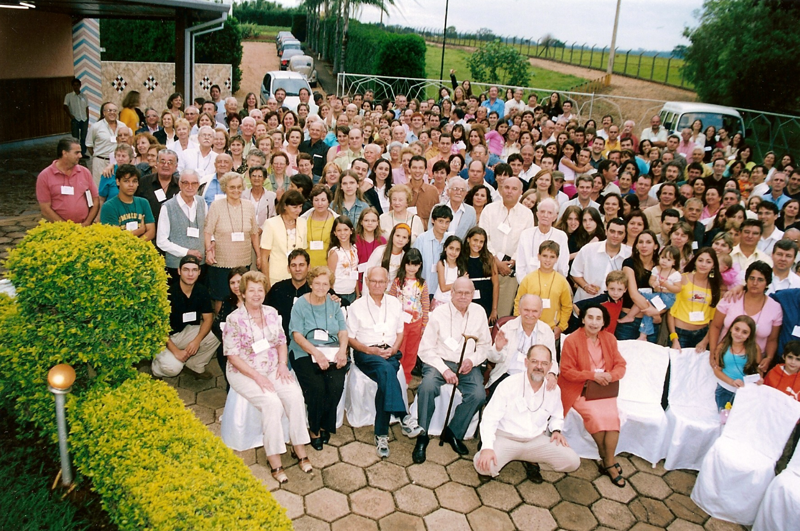
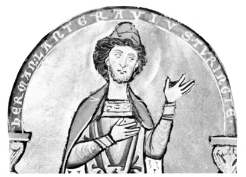
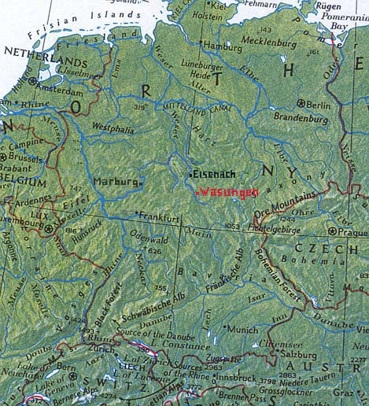
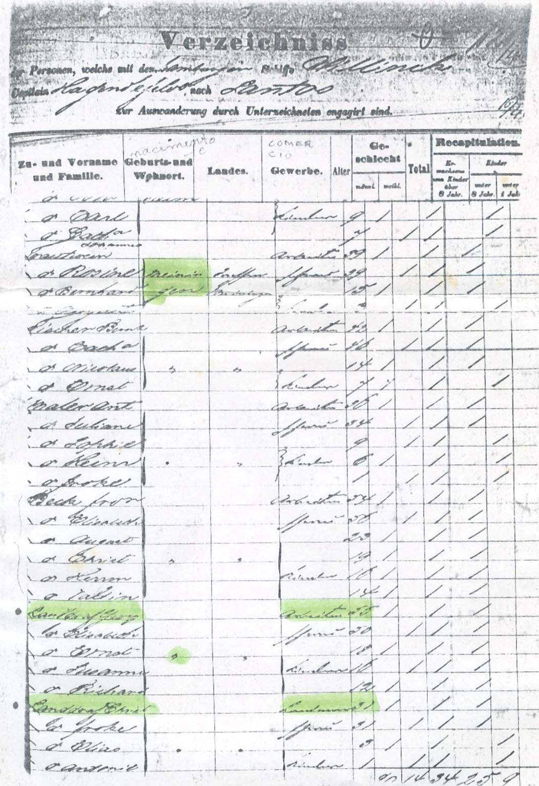

Esta página conta um pouco da história e a genealogia da primeira família Landgraf a vir para o Brasil, junto com os Beck, Schneider, Säugling e outros, em 1861. Quatro irmãos Landgraf e seus pais vieram de Hamburgo no navio Willinck, da companhia Theodore Wille.
Vieram da pequena cidade de Wasungen, no que era naquele tempo um país independente, o ducado de Saxe-Meiningen, hoje Alemanha. Em 2001 realizei o sonho de lá levar meus pais, Cinézio e Cecília, e meus tios Arnaldo e Lourdes.
Vinte anos depois, um grande grupo de alemães (incluindo os Landgraf, os Säugling, os Beck e os Schneider) comprou terras e criou um pequeno bairro chamado Cachoeirinha, no caminho entre Pirassununga e Analândia.
📖 O Livro da Família
No dia 26 de novembro de 2005 ocorreu em Pirassununga o lançamento do livro "Herdeiros de um sonho", escrito por Cinézio Landgraf. O livro contém 150 páginas narrando nossa história e mais especificamente nosso ramo.

No dia 26 de novembro de 2005 ocorreu em Pirassununga o lançamento do livro "Herdeiros de um sonho", escrito por Cinézio Landgraf. Estima-se que quatrocentas pessoas lá estiveram, no que foi o primeiro congraçamento da grande família Landgraf. O livro contém 150 páginas narrando nossa história e mais especificamente nosso ramo, e outras 110 páginas contendo a árvore genealógica que conseguimos construir até agosto de 2005.
A Origem e o Brasão
Ainda não sabemos quando surgiu o sobrenome Landgraf, mas sabemos que a palavra já existia por volta do ano 1000, correspondendo a título feudal, como conde ou duque. A tradução mais direta seria "conde da terra".
Inserir Imagem: Escudo (Leão em Riste)
O "Leão em Riste": símbolo adotado pelos Landgraf da Turíngia por volta de 1100.
Hermann e a História Alemã
O título Landgraf adquire importância na época das cruzadas. Um dos mais famosos foi Hermann I. A corte de Hermann, no castelo de Wartburg, tinha a presença dos maiores poetas alemães daquele século. A importância de sua corte era tão grande que a ópera Tannhauser, de Wagner, o menciona explicitamente.

Inserir Imagem: Landgraf Hermann
Landgraf Hermann I da Turíngia, patrono das artes no Castelo de Wartburg.
Santa Isabel da Hungria
O filho de Hermann, Ludwig IV, casou-se com uma moça que virou santa, Santa Isabel (Elisabeth). Ela é famosa pelo "milagre das rosas". As igrejas franciscanas de Recife e de Olinda têm quadros retratando ela.
Os Ancestrais em Wasungen
Além de confirmar que nossos Landgraf vieram mesmo de Wasungen, estendemos nossa árvore genealógica até 1690. Wasungen é uma pequena cidade da Alemanha, hoje no estado da Turíngia, às margens do Rio Werra.

Inserir Imagem: Mapa de Wasungen
Mapa mostrando a região de Wasungen e Kaltennordheim, origem dos ancestrais.
Linhagem Ancestral
Heinrich Landgraf (1690-1758)
Fabricante de óleo. Nascido em Kaltennordheim. Mudou-se para Wasungen após um incêndio.
Johan Christian Landgraf (1735-1797)
Fabricante de óleo. Nascido em Wasungen.
Johan Michael Landgraf (1761-1835)
Diarista. Teve 10 filhos.
Johann Georg Landgraf (1805-186?)
Nosso ancestral que veio ao Brasil. Nascido em 26/07/1805. Casado com Elisabeth Margarethe Kiehm.
A Partida de Hamburgo (1861)
Segundo informa o Escritório da História da Emigração do Museum für Hamburgische Geschichte (Hamburgo, Alemanha), a família embarcou no dia 15 de Abril de 1861. Eles vieram todos de Meiningen, ou seja, do ducado de Sachsen-Meiningen, um "mini país" prestes a ser engolido pela unificação alemã de Bismarck.

Inserir Imagem: Documento Verzeichnis (Pág 121)
Registro original de embarque (Livro Verzeichnis, pág. 121, filme K1708).
Lista a família Landgraf a bordo do navio Willinck.
O documento de embarque confirma que viajaram no navio chamado Willinck a seguinte composição familiar:
Georg Landgraf: nascido em 1806 (aprox. 55 anos).
Elisabeth: sua esposa, 50 anos.
Christian: filho, 31 anos. Já era casado e trouxe a esposa Frederike (31 anos), o filho Elias (3 anos) e a filha Antonie.
Ernst: filho, 18 anos.
Susanne: filha, 16 anos. (Nota: as idades são compatíveis com a paróquia, exceto por Susanne, que não constava na lista original da igreja).
Richard: filho, 12 anos.
No mesmo navio, com destino a Santos, viajavam também as famílias Fischer, Maler, Beck e Säugling, todas oriundas de Meiningen. Vale notar que Daniel Säugling era casado com Eva Bernardine, irmã de Christian Landgraf.
O Compromisso com Theodore Wille
"O assinante... se obriga a fechar o contrato com um fazendeiro brasileiro... para trabalhar em uma colônia na província de São Paulo... a pagar pelo produto parcial de seu trabalho a passagem e os custos decorrentes."
Fonte Documental: Fotocópia do livro Verzeichnis, pág. 121, número 15, filme K1708. Obtido por Mercedes Wensel (irmã de Max Wenzel) a pedido de Cinézio Landgraf.
Primeira Geração no Brasil
Abaixo, os filhos de Johann Georg Landgraf que iniciaram a história da família no Brasil.
I. Christiano Landgraf (1830-1896)
Primeiro filho. Veio com a esposa Frederika Enk (mencionada no documento de Hamburgo) e os filhos pequenos. Casou depois com Maria Kastein.
I.F1Elias (1858-1917) c/ Ana Beck (chegou ao Brasil com 3 anos).
I.F2Antonia (1859-1956) c/ Cap. Fernando Braun (chegou criança).